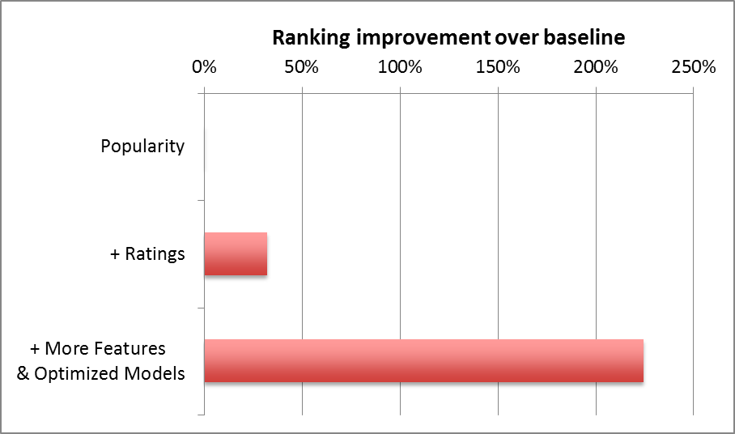
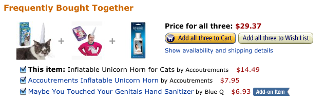
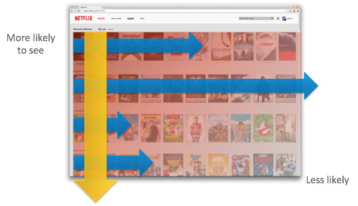

The wonderful world of recommender systems
Yanir Seroussi
yanirseroussi.com | @yanirseroussi | linkedin.com/in/yanirseroussi
Note: This talk is also available as a blog post.
Overview
- Motivation
- What are recommender systems
- Recommendation paradigms
- Myth busting
Motivation: why care about recommender systems?
Because money
For companies like Amazon, Netflix, and Spotify, recommender systems drive significant engagement and revenue
Because value
Recommender systems provide a scalable way of personalising content for users in scenarios with many items
Recommender systems: a true data science problem


Defining recommender systems
Wikipedia is wrong
Recommender systems ... are a subclass of information filtering system that seek to predict the 'rating' or 'preference' that a user would give to an item.
- Wikipedia (retrieved 28 September 2015)
There's more to it than rating prediction
Recommender is a misnomer – discovery assistant is better
System means elements like presentation are important
My definition
Recommender systems are systems that help users discover items they may like
Recommendation paradigms
Collaborative filtering
Given a matrix of preferences by users for items, predict missing preferences and recommend items with high predictions
Advantages
- Huge amount of research, well-understood
- Independent of item properties
Limitations
- Hard to deal with cold start, sparseness
- Often underperforms in reality
Content-based
Given user preferences for items, recommend similar items based on item content
Advantages
- No need for much initial user feedback
- Easy to implement when item metadata is available
Limitations
- Recommendations may be static and homogeneous
- Measuring similarity is hard for some items
Social & demographic
Recommend items that are liked by friends, friends of friends, and demographically similar people
Advantages
- No need for any user feedback – friend list is enough
- Trivially-implemented approaches can be depressingly accurate
Limitations
- Social graph and demographic data may not be available
- Privacy and creepiness issues
Contextual
Recommend items that match the user's current context
Advantages
- Adaptive and flexible
- More likely to elicit a response than approaches based on historical data
Limitations
- Contextual data may not be available
- Creepiness – may not be suitable to use contextual data
In practice: all of the above (and more)
Myth busting
The accuracy myth
Offline optimisation of an accuracy measure is enough
Reality: Users don't really care about accuracy
Why don't users care about accuracy?
They care, but not that much...
- UI/UX is king
- Other things matter: diversity, coverage, trust, serendipity, privacy, adaptivity, and more
- High predictive accuracy on low ratings is useless
- Offline datasets are biased – data isn't missing at random
Accuracy lessons from Netflix
Our business objective is to maximize member satisfaction and month-to-month subscription retention... Now it is clear that the Netflix Prize objective, accurate prediction of a movie's rating, is just one of the many components of an effective recommendation system that optimizes our members' enjoyment.
The black box myth
You can build successful recommender systems without worrying about what's being recommended and how recommendations are served
Reality: UI/UX is king, item type is critical
Example: Hynt recommendation widget
- Above the fold is better than below
- More recommendations are better than a few
- Desktop is better than mobile
- Fast is better than slow
The right explanation can change everything
| Aim | Definition |
|---|---|
| Transparency | Explain how the system works |
| Scrutability | Allow users to tell the system it is wrong |
| Trust | Increase user confidence in the system |
| Effectiveness | Help users make good decisions |
| Persuasiveness | Convince users to try or buy |
| Efficiency | Help users make decisions faster |
| Satisfaction | Increase ease of usability or enjoyment |
- A survey of explanations in recommender systems (Tintarev and Masthoff)
Example: Amazon & Netflix explanations

The solved problem myth
The space of recommender systems has been exhaustively explored
Reality: Development of new methods is often required
Example: The original Giveable problem
Recommend gifts for Facebook friends using liked pages
- Need to consider giver and receiver
- Likes are historical and sparse
- Likes are not for recommended items
- Likes not always available offline
Example: Initial Giveable solutions
Offline
- Infer similar pages with collaborative filtering
- Match pages to products with heuristics + Mechanical Turk + machine learning
- Enrich page and product data with Freebase
Online
- Pages + inferred likes → gift recommendations + reasons
The silver bullet myth
Optimising a single measure or using a single algorithm is enough
Reality: Hybrids work best
Another Netflix example: list of lists
Optimising each list's ranking and list ordering, while considering device-specific UI constraints, relevance, engagement, diversity, business constraints, and more...
Giveable/Hynt: single list, many algorithms
Generated a single list by statically mixing the outputs of the following algorithms:
- Contextual
- Direct likes
- Inferred likes
- Content-based
- Social
- Collaborative filtering of products
- Previously viewed
- Popular interests/products
Contextual bandits: the next logical step
A static mix of different approaches can get you very far, but there's a better way
The RichRelevance solution
- Train recommendation models offline, using a small number of strategies
- Serve recommendations from strategies that maximise clickthrough and revenue given a context with features describing the user, merchant, and webpage
- Continuously explore and improve the model
The omnipresence myth
Every personalised system is a recommender system
Reality: It's kinda true, but not necessarily useful...
Web search as a recommender system?
Web search is a recommender system for pages that gives high weight to the user's intent/query
When personalising web search, it seems sensible to use collaborative filtering techniques
My Yandex competition experience: matrix factorisation was a waste of time compared to domain-specific methods
Recommenders are as murky as data science
Just like data science:
- The bounds of recommender systems are hard to define
- Recommender systems are sometimes over-hyped
- There is a lot of value in recommender systems
- Using the recommender hammer to drive every possible nail is likely to lead to poor results and dissatisfaction